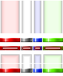
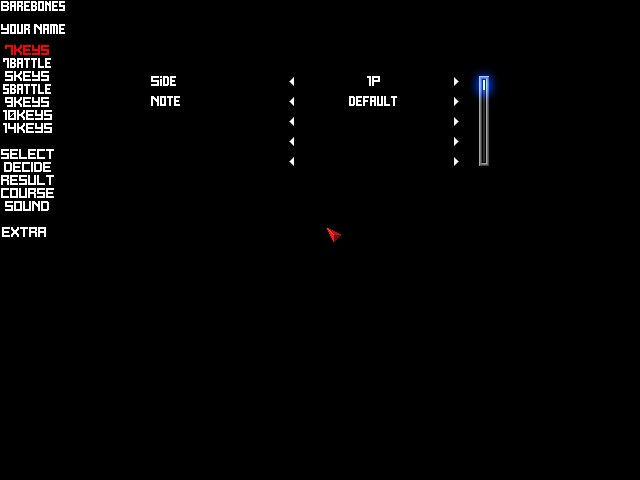
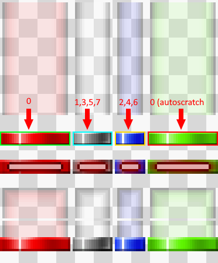
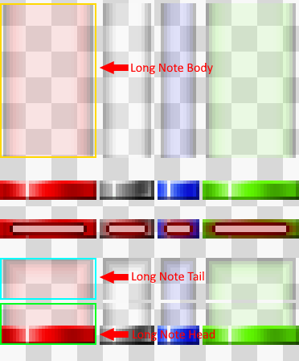
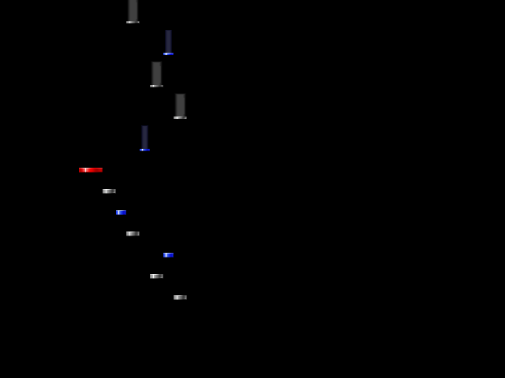

Preface
This article will cover how to start creating a playskin from scratch. Textures will be provided but the reader is encouraged to use their own and to experiment with their own ideas.
Barebones may imply minimal, but the reader will have a fully functioning playskin by the end of the article.
The following elements will be implemented:
- Bombs
- Guage/Lifebar
- Hit Lighting
- Judgements & Combo
- Judgeline
- Lasers
- Noteskin
A preview of the skin can be located below:
Outlining
Firstly, create a folder inside of LR2Files\Theme\. We will call our skin Barebones, so we should create the folder LR2Files\Theme\barebones\.
📁LR2Files/
└── 📁Themes/
└── 📁barebones/
Secondly we need to create a file inside of that folder with the .lr2skin extension. This extension is what LR2 looks for when searching the Themes directory. We will call ours barebones.lr2skin, though the name doesn’t have to match the directory name.
📁LR2Files/
└── 📁Themes/
└── 📁barebones/
└── 📝barebones.lr2skin
It is also a good idea to create directories for all of your customization options. Doing so allows you to much more easily manage each part of your skin.
📁LR2Files/
└── 📁Themes/
└── 📁barebones/
├── 📁csv/
├── 📁img/
│ ├── 📁bombs/
│ ├── 📁guage/
│ ├── 📁lasers/
│ ├── 📁notes/
│ ├── 📁judgeline/
│ ├── 📁judgements/
│ └── 📁lighting/
└── 📝barebones.lr2skin
Creating the .lr2skin file
Inside of our .lr2skin file, we will use the #INFORMATION command to include some general metadata, as well as define options for customizing the skin.
barebones.lr2skin
//#INFORMATION Type Title Author Thumbnail (optional)
#INFORMATION,0,Barebones,Your Name
//#CUSTOMOPTION Title DST_OP Label
#CUSTOMOPTION,Side,920,1P,2P
//#CUSTOMFILE Title path default
#CUSTOMFILE,Note,LR2Files\Theme\barebones\img\notes\*.png,default
#ENDOFHEADER
#IF,920
#INCLUDE,LR2Files\Theme\barebones\csv\1p.csv
Additionally, it would be prudent to create the csv files and textures.
csv\1p.csv
#IMAGE LR2Files\Theme\barebones\img\notes\*.png //0
//Measure Line (currently not defined to be anything, however lr2 will crash if this is not defined)
//1P index = 0 //2P index = 1
//SRC (NULL) gr x y w h div_x div_y cycle timer
#SRC_LINE 0 0 0 0 0 1 1 1 0 0
//DST (NULL) time x y w h acc a r g b blend filter angle center loop timer op1 op2 op3
#DST_LINE 0 0 0 0 0 0 0 255 255 255 255 0 0 0 0 0 0 0 0 0
#DST_LINE 0 0 0 0 0 0 0 255 255 255 255 0 0 0 0
img\notes\default.png
(Note textures from REMI-S AC)

Your file structure should look like this
📁LR2Files/
└── 📁Themes/
└── 📁barebones/
├── 📁csv/
├── 📝1p.csv
├── 📁img/
│ ├── 📁bombs/
│ ├── 📁guage/
│ ├── 📁lasers/
│ ├── 📁notes/
│ │ └── 🖼️default.png
│ ├── 📁judgeline/
│ ├── 📁judgements/
│ └── 📁lighting/
└── 📝barebones.lr2skin
Voila! our skin appears in the LR2 skin selector.\

Getting Notes to Display
We’ll start by sourcing our normal notes.
csv\1p.csv
[...]
//Notes
//Normal Notes
//SRC_NOTE index gr x y w h div_x div_y cycle timer
#SRC_NOTE 0 0 0 56 30 6 1 1 0 0
#SRC_NOTE 1 0 31 56 17 6 1 1 0 0
#SRC_NOTE 2 0 49 56 13 6 1 1 0 0
#SRC_NOTE 3 0 31 56 17 6 1 1 0 0
#SRC_NOTE 4 0 49 56 13 6 1 1 0 0
#SRC_NOTE 5 0 31 56 17 6 1 1 0 0
#SRC_NOTE 6 0 49 56 13 6 1 1 0 0
#SRC_NOTE 7 0 31 56 17 6 1 1 0 0

Similarly, we will define the our long notes.
csv\1p.csv
//Long Note Tail
#SRC_LN_END 0 0 0 80 30 13 1 1 0 0
#SRC_LN_END 1 0 31 80 17 13 1 1 0 0
#SRC_LN_END 2 0 49 80 13 13 1 1 0 0
#SRC_LN_END 3 0 31 80 17 13 1 1 0 0
#SRC_LN_END 4 0 49 80 13 13 1 1 0 0
#SRC_LN_END 5 0 31 80 17 13 1 1 0 0
#SRC_LN_END 6 0 49 80 13 13 1 1 0 0
#SRC_LN_END 7 0 31 80 17 13 1 1 0 0
//Long Note Body
#SRC_LN_BODY 0 0 0 1 30 48 1 1 0 0
#SRC_LN_BODY 1 0 31 1 17 48 1 1 0 0
#SRC_LN_BODY 2 0 49 1 13 48 1 1 0 0
#SRC_LN_BODY 3 0 31 1 17 48 1 1 0 0
#SRC_LN_BODY 4 0 49 1 13 48 1 1 0 0
#SRC_LN_BODY 5 0 31 1 17 48 1 1 0 0
#SRC_LN_BODY 6 0 49 1 13 48 1 1 0 0
#SRC_LN_BODY 7 0 31 1 17 48 1 1 0 0
//Long Note Head
#SRC_LN_START 0 0 0 94 30 13 1 1 0 0
#SRC_LN_START 1 0 31 94 17 13 1 1 0 0
#SRC_LN_START 2 0 49 94 13 13 1 1 0 0
#SRC_LN_START 3 0 31 94 17 13 1 1 0 0
#SRC_LN_START 4 0 49 94 13 13 1 1 0 0
#SRC_LN_START 5 0 31 94 17 13 1 1 0 0
#SRC_LN_START 6 0 49 94 13 13 1 1 0 0
#SRC_LN_START 7 0 31 94 17 13 1 1 0 0

We will do the same for mines.
csv\1p.csv
//Mine
#SRC_MINE 0 0 0 68 30 6 1 1 0 0
#SRC_MINE 1 0 31 68 17 6 1 1 0 0
#SRC_MINE 2 0 49 68 13 6 1 1 0 0
#SRC_MINE 3 0 31 68 17 6 1 1 0 0
#SRC_MINE 4 0 49 68 13 6 1 1 0 0
#SRC_MINE 5 0 31 68 17 6 1 1 0 0
#SRC_MINE 6 0 49 68 13 6 1 1 0 0
#SRC_MINE 7 0 31 68 17 6 1 1 0 0
And lastly we will repeat this all once more for autoscratch.
csv\1p.csv
// Auto Scratch
// Normal Notes
//SRR_NOTES index gr x y w h div_x div_y cycle timer
#SRC_AUTO_NOTE 0 0 63 56 30 6 1 1 0 0
// Long Note Tail
#SRC_AUTO_LN_END 0 0 63 80 30 13 1 1 0 0
//Long Note Body
#SRC_AUTO_LN_BODY 0 0 63 1 30 48 1 1 0 0
//Long Note Head
#SRC_AUTO_LN_START 0 0 63 94 30 13 1 1 0 0
//Mine
#SRC_MINE 0 0 63 68 30 6 1 1 0 0
After that, we will go ahead and define the positions our notes are drawn at
// Note Positions
//DST_NOTE index time x y w h acc a r g b blend filter angle center loop timer op1 op2 op3
#DST_NOTE 0 0 100 400 30 6 0 255 255 255 255 0 0 0 0 0 0 0 0 0
#DST_NOTE 1 0 130 400 17 6 0 255 255 255 255 0 0 0 0 0 0 0 0 0
#DST_NOTE 2 0 147 400 13 6 0 255 255 255 255 0 0 0 0 0 0 0 0 0
#DST_NOTE 3 0 160 400 17 6 0 255 255 255 255 0 0 0 0 0 0 0 0 0
#DST_NOTE 4 0 177 400 13 6 0 255 255 255 255 0 0 0 0 0 0 0 0 0
#DST_NOTE 5 0 190 400 17 6 0 255 255 255 255 0 0 0 0 0 0 0 0 0
#DST_NOTE 6 0 207 400 13 6 0 255 255 255 255 0 0 0 0 0 0 0 0 0
#DST_NOTE 7 0 220 400 17 6 0 255 255 255 255 0 0 0 0 0 0 0 0 0
We now have notes drawn to the screen! 